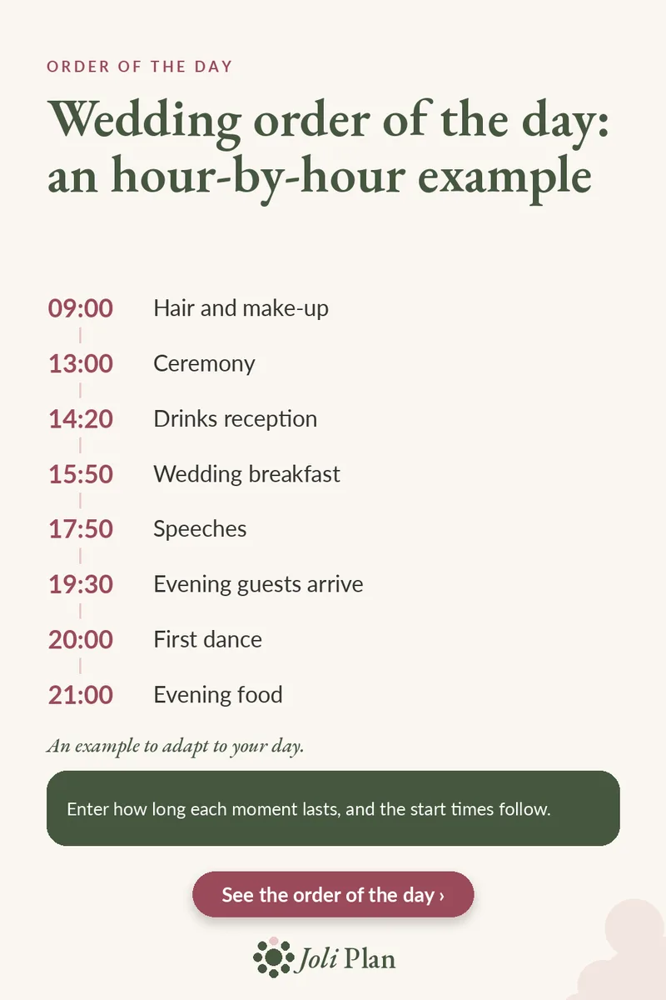

Wedding day
Wedding order of the day: an hour-by-hour example
Updated on 25/10/2026
A wedding day runs more calmly when everyone knows what happens and when. Here is an example order of the day that you can adapt to your own.
See the wedding planner on Etsy ›

The example, hour by hour
| Time | Event |
|---|---|
| 09:00 | Hair and make-up |
| 13:00 | Ceremony |
| 14:20 | Drinks reception |
| 15:50 | Wedding breakfast |
| 17:50 | Speeches |
| 19:30 | Evening guests arrive |
| 20:00 | First dance |
| 21:00 | Evening food |
How to adapt it to your day
It is an example, not a rule. Start with the fixed points, such as the ceremony, and fill in what comes before and after.
- Note how long each part of the day lasts, not just when it starts.
- Leave time between the ceremony and the drinks reception for group photos.
- Give a printed copy to your witnesses and suppliers.
Why duration matters more than the clock
If you only write down times, every delay means rewriting everything. If you write down how long each part of the day lasts, the times follow: when the photos run half an hour over, everything after them shifts automatically.